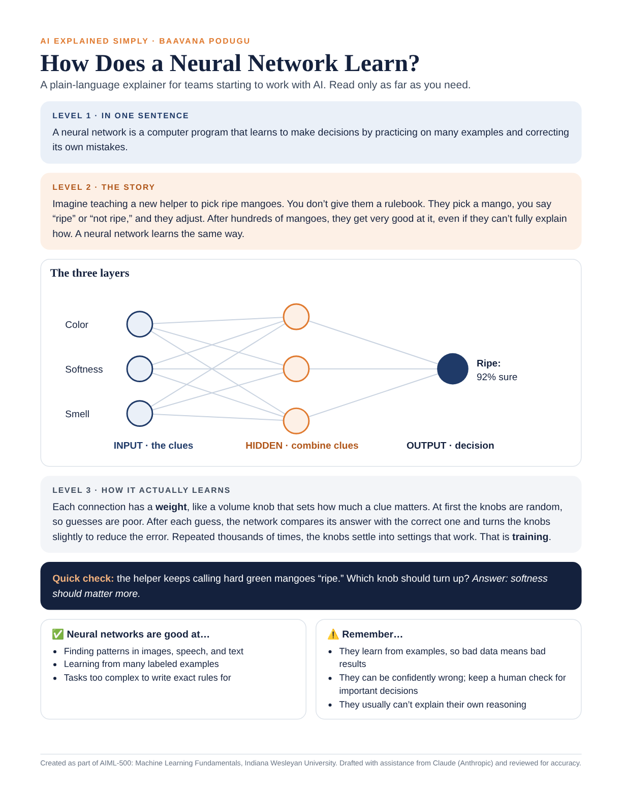

Description
This artifact is a one-page explainer that answers a common question from people new to AI: how does a neural network actually learn? It is built around one everyday story, a helper learning to pick ripe mangoes, and it covers:
- Level 1: a one-sentence definition
- Level 2: the mango story, plus a diagram of the input, hidden, and output layers
- Level 3: how training works, using “weights” as volume knobs that get adjusted after each mistake
- A quick check question so readers can test their understanding
- What neural networks are good at, and what to remember, including that they can be confidently wrong
Objective
I created this artifact for a course discussion on communication in change leadership. The challenge was to write the best simple explanation of neural networks I could. My goal was to apply proven communication-for-learning strategies so that non-technical colleagues could understand AI well enough to use it with healthy confidence, neither fearing it nor trusting it blindly.
Process
- Studied communication strategies. I reviewed the course’s strategies for change leaders and for presenting information, such as chunking, progressive disclosure, storytelling, visual aids, and feedback.
- Chose one relatable analogy. I explained neural networks through a helper learning to pick ripe mangoes, because it shows learning from examples without any technical terms.
- Layered the detail. I organized the explanation into three levels, from one sentence to how training works, so readers can stop when they have enough.
- Added a visual and a self-check. I drew a three-layer diagram that uses the same mango clues and added a quick check question for active learning.
- Adapted it for a workplace audience. For the portfolio, I turned the discussion post into a one-page handout and added a short section on strengths and limits, so teams adopting AI know when to keep a human check.
The Deliverable

Communication strategies applied
- Progressive disclosure: three levels, from simple to more detailed
- Storytelling and real-world examples: the mango helper makes an abstract idea concrete
- Chunking and visual aids: three short sections and one diagram reduce overload
- Interactive learning and feedback: a quick check question invites readers to test themselves
- Relevance and context: a strengths-and-limits section connects the concept to everyday AI use at work
Tools and Technologies Used
- Machine learning concepts: neural network layers, weights, and training through error correction
- Communication-for-learning strategies from the course lesson on change leadership
- Generative AI assistance: Claude (Anthropic) to help draft the explanation and design the handout; I reviewed and edited the content for accuracy
- HTML/CSS and SVG: the one-page layout and the layer diagram
Value Proposition
Unique Value
Team leads and trainers can share this one-page explainer to give non-technical colleagues a working understanding of neural networks in about five minutes, with no math. Readers can stop at the level they need, check their understanding with one question, and leave knowing both what neural networks do well and when to keep a human in the loop.
Relevance
AI adoption often stalls because people either fear tools they don’t understand or trust them too much. Change leaders need simple, accurate explanations to build healthy confidence. This explainer gives organizations a ready-made starting point for AI literacy during change, and it shows my ability to translate technical ideas for any audience.
References
Indiana Wesleyan University. (2026). Communication for learning in change leadership [Course material, AIML-500].